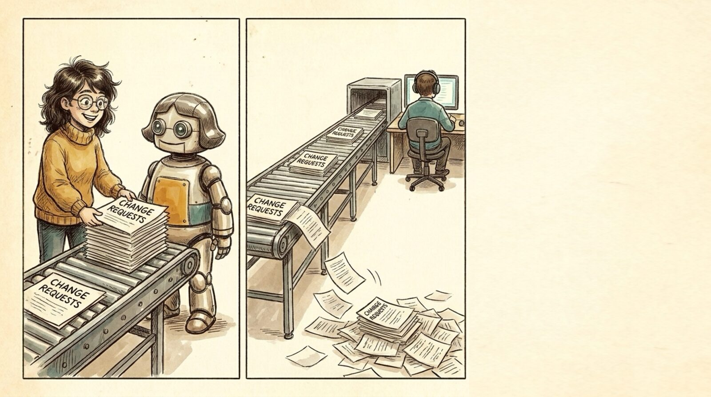

<section id="w05" data-transition="fade" style="background:#f5eee0">
  
  <h1 style="position:absolute; top:420px; left:1340px; width:480px; font-family:Arial, sans-serif; font-size:64px; font-weight:700; line-height:1.1; color:#222222">Where&nbsp;<br>we&nbsp;<br>are&nbsp;<br>today</h1>
  <aside>So what? Either engineering doesn't care, or engineering can just do it faster itself. Both end in the same place: a pipeline where non-engineers make changes and get them reviewed is not very valuable.</aside>
</section>
